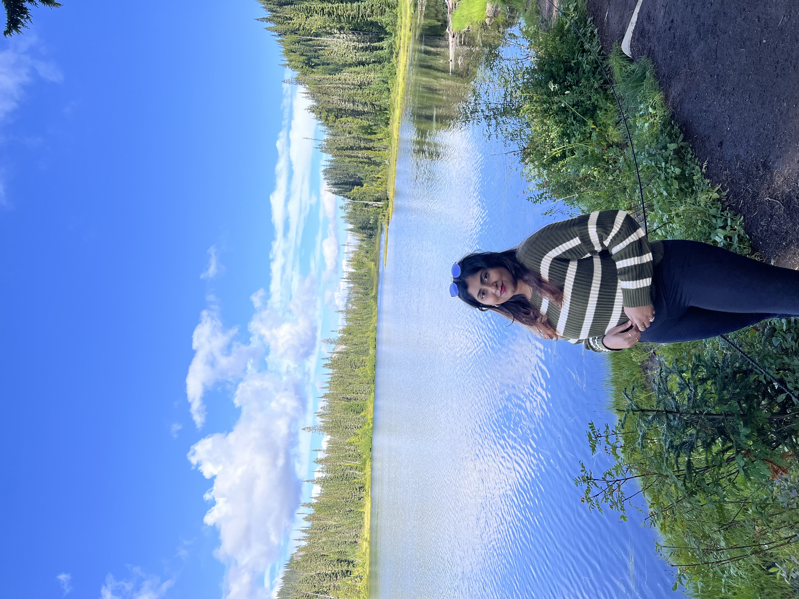

A UX Designer & Researcher
UX Researcher & Testing Lead at Stellantis, leading usability studies, expert evaluations, and large-scale surveys to shape automotive experiences that are intuitive, safe, and human-centered.
Selected Work
UX Research · 2024
Expert evaluation on a driver profile system at Stellantis — reframing usability issues as mental model opportunities.
Automotive UI Design · 2026
A dark-themed in-vehicle driver profile system for a next-generation automotive HMI. Four interactive states, designed for speed and safety.
UX Strategy · 2023
A centralized health companion for a world of fragmented medical records.

About Me
I'm Nikhitha, a UX Researcher and Testing Lead at Stellantis, one of the world's largest automotive companies. I lead full-cycle usability studies, expert evaluations, and large-scale surveys that shape how millions of people interact with vehicles every day.
With a foundation in Human Systems Engineering and UX from Arizona State University, I bring both academic rigor and real-world industry experience to every research engagement, from 30-participant moderated studies to 600+ response surveys on UserTesting and SurveyMonkey.
More About Me →